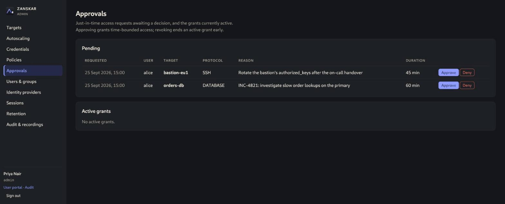

RELEASE NOTES
Zanskar v1.2.0
Latest release, 30 September 2026, after two release candidates
What the 1.0 manual QA round asked for. An install that serves HTTPS out of the box, MySQL and MariaDB alongside PostgreSQL, keyless SSH through a certificate authority as the recommended Linux path, guided AWS enrolment, and a console that owns its runtime settings, recording storage and logs.
- Install and TLS:
zanskar initdefaults to a gateway-managed certificate on 443 with plain HTTP redirected; a self-signed certificate at first start, the real one uploaded on the Settings page and served on the next connection. Existing installs keep their behaviour. - Databases: MySQL and MariaDB sessions through the gateway's own relay sidecar, a Databases page separate from Hosts, a database name and a TLS mode per target up to
verify-full, and a credential slot that can be vaulted, user-supplied or empty. - Keyless SSH: the certificate authority is generated in the console, which prints the
TrustedUserCAKeyscommands for each target; one principal per session certificate, a key id naming the Zanskar user in the target's auth log, an allowlist of login users, and a two-phase rotation with a certificate login test per target. - AWS: the gateway detects its own principal; enrolment previews the trust policy with the real principal, a CLI script and a CloudFormation template that create the role, and tests the role before saving, naming the failing stage. Windows autoscaling groups serve RDP and WinRM sessions, each instance pinned to the certificate it first presented.
- Access control: per-target protocol rules inside one policy, one open request per target with editable and extendable grants, retention per policy and per target.
- Operations: Settings applied live with install-time values read-only, a restart-required banner with a drain, recording storage in an S3-compatible bucket configured and moved from the console, a Logs page,
zanskar key status | rotate | rotate-master. - Onboarding and audit: a one-time password for new local users replaced at first sign-in, auditor accounts strictly review-only, recording and transcript download audited, targets retired rather than erased, names instead of ids everywhere.
- Console: Events and Recordings inside the admin console below Logs (the audit portal is for auditor-only accounts), audit details that read Authenticator enrolled rather than an action code, and a logo that takes you back to the first page.
Install v1.2.0 GitHub releases
Known limitations in 1.2
- Single instance only; more than one replica breaks cross-pod admin terminate and auditor shadowing, and the Helm chart stays a preview.
- Database sessions need Docker or Podman on the gateway host and are not available inside the Compose stack; the MySQL and MariaDB relay is the gateway's own image, pulled on first use.
- No SAML, SCIM or WebAuthn. Windows and database passwords are not rotated by Zanskar; the certificate authority removes the need for SSH key rotation.
Upgrading from 1.0.0
Install the new package or set ZANSKAR_VERSION=1.2.0 and restart. Migrations run at start and rewrite no data. TLS behaviour is unchanged for an existing install; only a fresh zanskar init defaults to managed TLS on 443. ZANSKAR_AWS_GATEWAY_PRINCIPAL can be dropped on EC2 and EKS gateways, which now detect it.
Zanskar v1.0.0
25 September 2026
The first stable release. Zanskar reached it after two release candidates: rc.1 caught a signing break in the release pipeline before anything was published, and rc.2 passed pipeline verification and a clean-machine install test on both documented paths.
- Sessions: SSH and WinRM terminals, RDP and VNC desktops through guacd, PostgreSQL through a credential-isolating proxy sidecar, SFTP file transfer beside the terminal.
- Access control: users, groups and three roles; local accounts with Argon2id and mandatory TOTP, or OIDC and LDAP/AD; tag-based policies with time windows, session limits and clipboard/file switches; host-key and certificate pinning with admin approval.
- Just-in-time access: approval-required policies, time-boxed grants, an Approvals queue, automatic expiry, full audit trail.
- Autoscaling: AWS Auto Scaling groups via a cross-account role and EC2 Instance Connect, with failover when an instance disappears.
- Audit: recorded sessions with command-seek playback, live shadowing and terminate, hash-chained audit log with
verify, SIEM export, recording retention. - Operations:
zanskar init, hardened systemd unit in deb/rpm packages, Docker Compose stack with Caddy TLS,backupandrestore. - Supply chain: every artifact checksummed and keyless-signed with Sigstore, multi-arch image on ghcr.io, pinned CI, OpenSSF Scorecard and Best Practices badges, CodeQL clean.

Known limitations in 1.0
- Single instance only. More than one replica breaks cross-pod admin terminate and auditor shadowing; the Helm chart is a preview until that control channel lands.
- Database access supported PostgreSQL only; MySQL and MariaDB arrived in 1.2.0 through the gateway's own relay sidecar.
- Database sessions need Docker or Podman on the gateway host and are not available inside the Compose stack.
- No SAML, SCIM, WebAuthn or automatic credential rotation yet.
What comes next
Phase 4: the cross-pod control channel that unlocks high availability and makes the Helm chart a supported path, SAML and SCIM, WebAuthn, delegated and multi-step approvers, access reviews, and GCP and Azure scale sets. Follow the roadmap.
Upgrading from a release candidate: 1.0.0-rc.1 and rc.2 share the schema with 1.0.0. Install the new package, or set ZANSKAR_VERSION=1.0.0 and pull; migrations are a no-op.